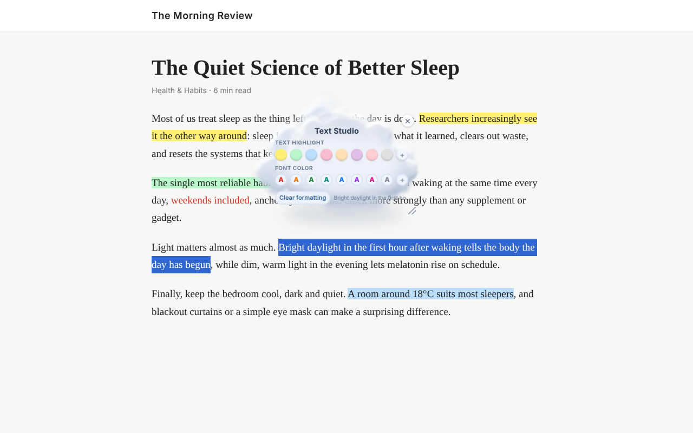

Chrome extension
Text Studio
Highlight & Font Color
Add Word-style highlights and font colors to text you select on any website, from articles and docs to AI chat answers. Everything stays in your browser.

Highlight and recolor
Eight preset highlight and font colors, plus your own from an eyedropper, color wheel or HEX/RGB code.
Highlights that stay
Your formatting comes back when you return to a page. Clear one page or everything at any time.
Styles you'll enjoy
Animated clouds, chibi study lamps and flying saucers, or a compact classic panel. Rename the toolbar and set your own background.
Private by design
No account, no analytics, no ads. Nothing you select or browse is ever sent anywhere.